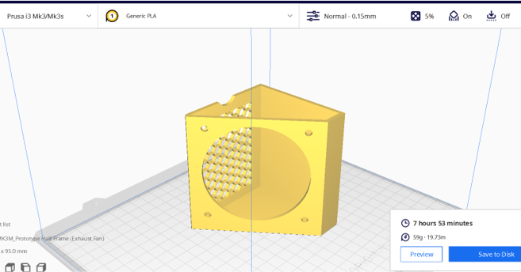

Module Project: Portable Fume Extractor
Why?
- To protect the user's health: Inhaling to much soldering fumes is bad for the user in the long run
- Improving air quality: Back to the environment
- Improving productivty: Prolonged use of soldering will give the user's headache which lessen the productivty
Who are the target audience?
- Student
- Teachers
Description
My Portable Fume Extractor removes hazardous fumes and particles during soldering. It has a motorized blower and filter(s) and can be moved easily between workstations. It can be powered by electricity or battery.
Features
- It is portable
- It is Compact
- It is Light-Weight
- It is able to operate simultaneously without having to on or off
What Will I Fabricate
Bills of Material
Initial Design Stage
It took me 3 concept to come out the final design for this prototype.
Concept A:
Battery Pack --> Ventilation Fan --> Noise Damping Material --> Washable Filter --> Removeable Permanent Filter
Concept B:
Wall Plug --> Fresh air Fan --> Quiet DC motor --> Paper Filter --> Disposable Filter
Concept C:
Solar Panel --> Trans Air Fan --> Fan Configuration --> Sponge Filter --> Removeable Permanent Filter
Final Design Stage
After consideration, I decided to go with Concept A as it was easy. light weight and cheapest. I also decided to add a servo which will be used as an indication.
I remodel Concept A to a better design
Specification Table
Planning Stage
- With the help of my friends, they assist me on holding the cardboard prototype by helping me hold it.
- Once, the cardboard prototype is roughly done, I trasnfer the dimension to fusion 1 to 1 scale.
- Once, the measurement in fusion is all done. I send it for printing. I have to cut the frame in half in order to fit in the 3D printing.
- While the printer is printing the frame, I went and start with my coding.
- After everything, is done the last job is to sand and cut the extra piece in order to fit everything inside
Individual Components & Parts
3D Printer: Half Frame (Exhaust Fan)
3D Printer: Half Frame (Arduino Fan)
3D Printer: Cable Clip
Laser Cut: Window
Programming
The code for the exhaust fan was a little abit confusing but with the help of YouTube, I came across an Indian girl YouTube video. Where she did a smoke sensor with a buzzer. The only difference between her code and mine is that the output for her is a buzzer whereas mine is an exhaust fan
Original Code

Edited Code Exhaust Fan

Edited Code Servo

Combine Code

TinkerCAD Fume Sensor, Exhause Fan & Servo
The hardest part about this is to determine the sensor value. It took me awhile to determine the sensor value for different type of gas. So, I had to improvise as I didn’t have any soldering tool with me. The only idea that came to my mind was either burning a piece of wood, burning a piece of plastic or smoking. Thankfully, my father was able to help me as he is a smoker (not me). It took us 2 hours to actually determine the value of different types of fumes.
- If(sensor value range 191 – 200): Fluctuate to air surroundings
- If(sensor value is below 285): Cigarette (Light Smoke)
- If(sensor value is below 295): Cigarette (Heavy Smoke)
- If(sensor value is below 447.5): Solder Fumes
Based on the data collected, it shows an interesting kind of result and I actually learn a lot from it. I learn 2 things.
1. The thickness of the fumes will determine the value of the sensor which will send signal to the exhaust fan
2. The time taken for the exhaust fan to turn off after having a thicker fume
Final Assembly
Hero Shot


Video
Problems Ecountered & Solution
Limitations & Solutions
Reflection
Limitations & Solutions
Reflection
Reflection
Myself:
- Gone through a phase of challenges and identify the problem that I want to solve.
Building phase:
- Numerous trial & error and troubleshooting of the prototype due to the sizing and the structure
Experience:
- Learn more about project management and problem solving.
Overall Prototype:
- Proud of the achievement of our prototype at the end of the day